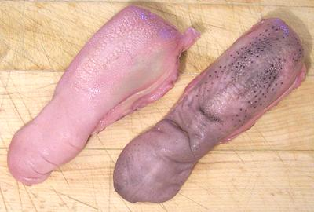

Lamb Toungs

[Lengua de Borrego (Spanish)]
Lamb tongues are eaten by pretty much every culture where lamb is a
significant item in the diet. They are sometimes pickled. As with the
tongues of other ungulates, they are quite fatty.
The photo specimens, packed in a tray of 6, were 5 inches long and
weighed 2.7 ounces each. I have purchased New Zealand lamb tongues that
were 7 inches long and weighed 5.7 ounces, but they were cut farther
back and included small bone and some fat and glandular material at
the root end.
More on Lamb Innnards.
Buying:
Lamb tongues are most often found packed in trays
of 4 to 6 in markets serving Middle Eastern, Armenian, Turkish or other
lamb focused communities. As with all parts of lamb in North America,
they are expensive, but you can use less expensive pig tongues instead,
unless you are a Muslim or observant Jew.
Cooking:
For best results, and for broth that can be used
in recipes, follow this method:
- Wash the tongue and cut away any fat, lymph nodes or other stuff hanging
onto the bottom and root end. If there are bones, you can leave them in
for now.
- Soak in cold water for 4 hours (if you have time).
- Put in a pot with cold water, bring to a boil, and simmer 15 minutes
- Clean the pot, refill with cold water and 1/2 tablespoon of
Lemon Juice. Put the tongues back in and bring
to a boil. Simmer for 1 hour.
- Take off heat and let cool until you can handle the tongues. Pull them
out and peel off the skins (this is much more difficult when the tongues
are cold). Return them to the broth to finish cooling.
- Many recipes call for a good chill in the refrigerator, after which
the tongues will slice neatly and fat can be easily skimmed or strained from
the broth. The broth is used in many recipes.
Yield:
Raw yield is very good, 85% to 90% depending on how
the tongues were cut. They will, however, shrink quite a bit in cooking.
A 1 pound 7 ounce raw batch of tongues yielded 12-1/2 ounces trimmed cooked
and peeled, but that's still 54% which is pretty good considering cooking
shrinkage for most meats.
as_tongz 091015
as_tongz 091015 - www.clovegarden.com
©Andrew Grygus - agryg@clovegaden.com - Photos on this
page not otherwise credited are © cg1 -
Linking to and non-commercial use of this page permitted